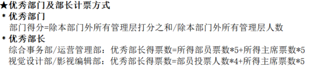

概述
本页面将从各个方面出发，对招生新媒体中心主席团的工作进行简要交接。考虑到招办的事情往往多而杂乱，仅换届当日难以交接完全，因此通过这种方式做一些记录，旨在帮助新任主席团尽快度过接手初期的迷茫和犹疑状态。
首先是第八届招生新媒体中心各类资料的留存(点击跳转)：
 第八届招生新媒体中心资料留存
第八届招生新媒体中心资料留存
其中有一些可能近期会用到的资料，这里也单列出来作为一个导航页：
组织框架调整
自从招办更换指导老师以来，会发现老师的整体方向是会和以往有所变化的。上一位老师更侧重于“新媒体”，组织也和其他学生组织一样运转；而吴老师显然更侧重于“招生”，会让招办参与更多的招生工作，而将新媒体平台的运转运营很大程度上地进行了放权。但更换指导老师至今已经两年，很多问题和与之前的不同也已经暴露出来，作为经历过两位老师指导的最后一届成员，特此在这里提议借换届的契机对组织框架进行大调整。
视觉设计部的拆分探讨
视觉设计部以往负责照片拍摄、平面设计、手绘等多方面的工作以及官网的维护更新，按照以往的情况5部长+15部员是能够满足工作需求的。
但从第八届的情况来看，显然现在的视设承担了更多的工作比如招生宣传册的设计等。整体任务类型复杂、工作量也相对较大，因此提出对于视觉设计部进行拆分的考虑。下面基于第七届与第八届主席团的意见给出一种提议。
拆分手绘组
由于考虑到拍摄和设计往往关联密切，而手绘组相对工作性质更为独立，因此考虑将手绘组从视觉设计部中独立出来另设部门，可以是一个规模相对较小的部门，主要负责小红书以及表情包等产出制作。
初步构想该部门可以仅有2名部长与5至8名部员构成。文案产出可以同运营共同完成，表情包更新也可以再次尝试上传至微信公众号平台。
综合事务部的规模压缩
综合事务部在历届招生新媒体中心中发挥着中轴的作用，负责协调各部门、统揽招办整体事务和组织内部管理，同时负责对外管理各地区招生咨询群、偶尔举办活动等。
从第七第八两届的工作情况来看，由于老师看重招生工作要多于新媒体产出，因此很多招生相关的任务实际上是整个组织各个部门一起参与的。而这样一来综合对外的作用被极大地淡化了，同时参考了部门工作量和其他部门的对比，在此提出缩减部门规模的方案。
提议综合事务部留任部长2名，分别一人负责对内的日常事务及考评加分，以及另一人负责对外的招生群、招生宣传大使等工作。部员预估6-8人即可，下面详细分析具体工作。主要事务即为考评、招生群答疑、招生宣传大使，不需额外举办与招生无关的活动，平时负责办公室卫生和物资整理，在有大型活动时仍然所有部门共同参与活动组织的工作。
月度考评
由于第八届暴露的问题，出现部门信服力不高的问题，因此今年选用了问卷星匿名考评，但显然各部门仍然对此较为抵触，考评的参与人数也总不如人意。
第九届一方面可以考虑更换一种考评方式，或者在原先的基础上做一些变动。比如仍然回归钉钉考评，可以看到提交情况，但由主席或者顾问负责发布和将数据导出，抹去填写人信息痕迹后交由综合应当更能服众。这里顺带一提关于第八届开始“优秀主席”不再列入考评的原因，主要是主席团的工作是分管的，并且考评本身并不能对主席带来影响缺乏管控力，因此部长或者部员若有问题直接指出（哪怕是在例会上）等或许是更好的方式。
月度考评结束后，可以综合内部一名成员负责一个部门的考评结果整理统计，这名部员可以长期地负责与这个部门对接比如报销等等，并且此类工作每月一次，也并不困难。
学期加分表
活动相关
关于运营管理部的定位讨论
运营管理部作为同时负责微信公众号和QQ空间的部门，在关于招生政策的方面相对来说应该接触更多，可能这方面工作也会更有优势一些。同时结合公众号推送近来和校区官号总有些内容相近还有不让发的问题，可以考虑调整运营定位，将招生政策相关的工作部分以运营为主力，平时的产出方面也可以多一些招生方面的东西，比如老师又去哪里宣讲了等等。
另一方面确实运营在公众号后台留言和私信、QQ小招等平台上会有很多避不开的被询问招生政策等内容，这些也是本提议的原因。
这种模式下公众号的压力可以给的小一点，不用更的太多，质量优先更重要。
组织整体的一些工作
目录
可以点击跳转。
-
需要尽快确定的事项
-
对内的事项
- 迎新
- 纳新
- 社团年审（10月之后，视校团委情况而定）
- 成立大会
-
跟随老师举办的活动
-
其他常规工作
- 招生宣传大使（统一整理在综合的部分）
- 招生宣传物料（统一整理在视设的部分）
- 招生咨询群（统一整理在综合的部分）
-
组织内部管理的事项
- 月度考评与月度总结
- 平台月报
-
末段的一些人情方面的活动
换届
主席团换届
一定一定要在部长换届之前完成。
部长换届
部长换届应当是以新任主席团为主、上届该部门部长为辅的考核和决定，有需要时可以有上届主席团的参与。
面试形式按照近几届的情况，每个部门形式不一，方式也较为多样。但考虑到部长换届时间可能较为紧张，因此不建议将一些需要大量时间人手的项目安排进部长换届工作，即使很有趣很新颖。
组织规章
也不用年年改，主要是感觉管理上可以不像前几届那么严苛，或许往社团的方向靠一靠也不是坏事。
年审
社团年审，是要参加的。另外社团相关的评优评奖我们也都可以参与，多关注一下社管的群。
是的我们本质上是一个社团，但是社管又不太能管得了我们。按目前国家的规定学生组织只定义为学生会，但我们的情况又不是传统的社团，注册的时候确实写的是校级学生组织，所以有种介于两者之间的感觉，可以考虑两边的好处都蹭一蹭。
跟随老师举办的活动
一般来讲跟随老师的活动是有一定金额的补贴的，因此不适合以某个部门为主去参与。建议以管理层为负责人、各部门成员填表报名先到先得（注意要淡化部长转发消息的时间不同造成的影响，可以比如设置一个较晚的开始时间）
下面是一些活动的细节问题。
校长论坛
主要分为报到和会议两部分，老师会提人手方面的需求，基本是成组完成工作，没什么大问题，每组的负责人尽量是管理层。做好服务即可。
招生答疑
答疑分为主楼办公室和N楼办公室，两者压力相差较大因此每小时的补贴也有差距，往年说是主楼15r/h，N楼5r/h，但实际应比此更高一些。
建议主席尽量多在主楼答疑，排到的人也尽量是部长尤其是第二年答疑的部长（主楼电话一般是不间断的状态）；N楼办公室可以每组2-3人（视电话多少实际情况定）外加一个负责人（熟悉政策的管理层）。比如24年招生答疑是李新睿和章炜琪一人一天负责N楼答疑，主要工作就是关键时候提醒一下成员，及时纠错什么的。 从去年的情况来看，负责人如果接电话太多的话容易关注不到其他人的答疑情况，所以今年建议负责人以听别人接为主，忙不过来了再帮忙。
答疑期间做好订饭订水的供应，一般安排给综合，每天按时统计，多关注当天值班的人有没有没回复的（可能是忙起来没顾上看消息，不要因为这种导致没定上饭，所以这里可以考虑不需要定的才回复，默认大家都有饭这样），订水也可以看着没水了就去N楼一楼门口保安室找楼管换水，是记招生办（教务处）的账的，订饭也是。
排班的时候尽量均衡一些，如果负责人发现有些人的答疑工作问题较大可以减少排班。另外排班建议掌握在主席团手里，一方面避免偏心，另一方面部长排哪怕公正也容易被别的部门说三道四，涉及到发补贴的都同理。另外要统计好答疑时长，网络答疑可以和老师商量一个折算方式，及时公示一下方便发补贴。
综招
报到日相对宽松，主要是校测的那天，基本上是12小时隔绝在N楼（电子设备上交），整体会比较累，可以关注一下大家的精神状态，可以提前提醒大家带本书、带点零食等防止无聊。考试过程中一切以老师为主，跟着走即可。
出活动建议大家统一着装会好一点。
校园开放日
高招会和校园开放日的结合。高招会的部分不需要我们参与太多，校园开放日可以设计个活动办办啥的，也是给大家参与的机会，内容上建议让学生及家长能在学校里走走这种可能好一些，尤其是抓学校的宣传口。
文化衫
设计是视设负责，建议是有大致思路或者草图之后拿出来在管理层商讨一下，尽量避免大家普遍不喜欢，另外之后可以考虑一下要不要设计成除了工作的时候也能穿，就是平时能穿出去的款式。甚至也可以不只是T恤，别的样式都可以尝试。
一般商家可能老师会给，提前要到尺码表内部统计一下需要的码，订的时候每个码建议都多订几件，往届主席团这种也可以一起定两件给他们当纪念。
目前这部分有个问题就是做的太晚了，感觉没怎么穿就换届了又穿不着了，可以考虑下要不要做改变。
送大四
人情味的部分，大四学长学姐任过管理层的都可以喊来，现任人员一般是管理层全员。具体安排可以和老师联系，有想法就提。
另外大三的曾任部长或者关系特别好的也可以邀请。
平台月报
建议还是要有的，平时统计一下也不麻烦，还能给大家一个参照；另外很多没有自动统计功能的平台要是赶到换届或者年审的时候再开始统计会有亿点麻烦。
拍合影&团建
管理层的合影and全员大合影，不建议拍太晚因为会赶上期末考试。大合影可以洗出来挂墙上什么的。
如果安排大团建，个人建议提前分好每个部门负责什么（采购、做饭等等）防止后续出力不匀有意见。
这个似乎会用组织经费报销一部分，还有一部分需要大家平摊，所以要统计好谁来了。（老师那边应该不给报销）
校运动会请假
注意：紫丁香不认招办公章的假条，请假需要报备团委！
招生政策培训
政策培训一般会是等统招（一般是出的最晚的一类）的政策落定之后再进行。
招生宣传大使培训
时间一般在春季学期期末考试集中的时间段之前、政策都出来之后。
主要是防止大使在地方群里乱说话说错话，提前打好预防针，也可以查一下出勤什么的，但培训的内容就简化一点就行，只告诉他们能对外说的部分，不要说太多（别把他们当自己人的那种培训）。
往年是综合部长负责，也可以由主席团或者熟悉政策的部长进行。
内部培训（招生答疑）
一般是在电话答疑开始前进行的“岗前培训”，这个阶段会有一些内部资料比如一本招生信息汇总等，内部资料做好保密，答疑期间最好不要拿出办公室。
这个阶段一般会了解到一些“内情”，比如“保专业”的本质和说法等等，这部分培训一般由主席团熟知政策后进行，最关键的是答疑过程中不确定的内容可以不回答或者记个电话等确定好之后再打回去。确实会有些家长给压力要求给个说法还要录音截屏什么的，这种遇到了不要慌，稳一点先应付过去，不该说的不要松口就好。
新生大数据
会有一份很全很全的新生数据，全到包括所有人的身份证等信息、家庭甚至监护人的信息，所以这份文件一定不要外传，甚至最好别让他出现在网络上（老师可能会用哈工大APP发给主席团）。建议是主席先对数据做一个筛选，把那些多余的信息删掉之后再让部长们经手。
这部分的版面设计是视设完成，第七届的数据筛选是综合部长做的，第八届是主席。确实部长们在这个阶段会比较忙，可以考虑主席团来做，或者比较清闲的部长来做。
数据筛选的时候可能会比较麻烦，笨办法用Word的筛选功能一点点找，如果是会数据库技术的话倒也可以用那个来查（应该会稍微快一些）。
注意事项：生源地问题，如果涉及到使用中国地图，一定要保证地图是完整的，尤其是东南方向岛屿部分。另外有些信息可能会涉及到个人隐私，这边建议参考往年发的以及本部往年发的（这很重要，要不然会被找茬），最好是做之前先和老师确定好什么能发什么不能。
新生群
一方面是入群把关，由综合对着身份证进行，过程做好保密不要泄露学生信息。另外往届招办人可以放熟悉的人进去划划水（氛围组）。
进群后维护好秩序，不要拉踩，发言太抽象了及时制止，人开始多了之后发一些推送、视频等作品介绍学校，一般是中午晚上饭点禁言半小时到一小时发，具体运营负责。校会一般会有系列介绍可以帮他们转一下，但不是很建议让他们进群，容易有纠纷。
一般来说按要求是不许在群里宣传各类社团组织实验室的，他们问就说学校有要求暂时不行，但可以在快开学的时候宣传招办、校会和志愿服务中心这三家（和迎新相关。可以看一下那部分内容的设想）单独宣传，尤其是咱自己的内容，给纳新做好铺垫。
另外开学之后新生群还能保留一个月，这个阶段就是给其他社团组织实验室打广告的时候了，之前有个“工大一家亲”的群可以利用起来，让他们往里发，咱负责转进新生群，这个阶段可以多拉一些大家的好感什么的。另外这个群之前的计划是我们会拍很多活动什么的，那么素材可以和大家共享，尤其是很多社团只有活动没有宣传能力，他们很需要这个，所以咱也可以用这种方式给人情，这样咱需要他们的时候就好开口。
迎新
迎新这块按理说社团组织普遍没什么资格参与的，但招办毕竟是招生一线所以相当于是有一个小特例了。而这方面我们又不好和校会等抢风头，另外往年的迎新活动也体现出来一个问题就是新生分不清校会和招办有什么区别，以及多方的活动其实重合度还是很高的。
因此建议可以考虑借助人际关系，将几个和迎新有关的组织联系起来（一般是校会、招办、志愿服务中心），一起办一个大一点的完整活动，宣传品上也可以同时宣传三家，对大家都有好处，也不会把自己置于大家的对立面。
另外迎新的时候建议准备好纳新宣传物资，在自己的摊点上多发。
纳新
纳新宣讲会
一般来讲纳新越早越有好处，抢第一茬能收到最多理想的新生。
提前打听新生的军训安排什么的，早做准备，建议宜早不宜晚。宣讲会办几场怎么办都可以灵活调整。
宣讲会上各部门的PPT一定要做好把关，去年问题比较严重地出现在综合，很多组织上的事情被拿过来在综合的部门内容中讲，会很大程度上拉偏新生的观念，另外运营的PPT有些陈旧，这类问题要避免。
此外要保证各部门PPT部分动画之类的（一般是综合统一负责，但也可以自己做）质量基本在一条线上，不要有给这个部门做的很精致，给别的部门就随便一弄的情况。
纳新工作
一般在宣讲会前就可以开始报名了新生群也会提前发纳新的报名表（记得22年在开学前一段时间就已经可以报名了），视具体情况留报名时间，报名截止后的下一周其实就可以开始面试了，当然也可以视实际情况变动，比如在某个周三停止报名，下个周五开始面试，有时候多一两天节奏就能稳很多。
纳新的时候可能需要主席团多强制规定一些事情，比如每个部门的人数上限、人员选定有重合时的处理方式等等。纳新报名表上的“第一志愿”“第二志愿”的说法建议改一下，比如“志愿一”这种可能好一点，淡化掉两个部门的先后次序，部员最后两个志愿进哪个一定是管理层决定的而非部员能决定的，决定权自始至终不应该在新生手里。而淡化志愿先后顺序也是对内部人员的提醒，避免出现第八届面试时在例会上已经明确志愿不分先后的情况下仍然以此“抢人”的情况。
另外两个部门都想要同一个新生的情况是正常的，毕竟理想人选的特质往往是想通的，这种时候的决择主席团应当多参与调解，不应当出现一个部门拿到了所有和其他部门有重合的人选，也不应当有完全没拿到重合人员的情况。
在纳新的事情上大可以做的手腕强硬一些，避免后续工作处处有影响。好在很多时候在没有原则性问题的情况下就算一时有人选的争执也并不会影响后续工作，所以主席团把握好度的情况下是能避免大部分问题的。
录取通知书附赠品设计
月度考评与月度总结
月度考评
第八届月度考评工作实质上出现了很大的问题，尤其集中在管理层的考评内容上。
目前优秀部长的评选方式是一类带有权重的投票：

这里的权重分为两部分即主席团投票和本部门部员投票，部员投票的权重本质上应当是根据各个部门的人数决定的而非简单的定值，而权重显然也会受到部门人数变动的影响，因此通过这种提前规定好的恒定权重是很容易出现误差的。
这里考虑了一类新的方案，
综合事务部
新生群
迎新
纳新
成立大会
招生宣传大使
志愿时长
志愿时长可以直接提交给志愿服务中心，不用经过校团委（团委会卡时长），另外时长方面可以提前定个标准，另外不建议和前几年相差太多。
招生群
订饭订水
运营管理部
公众号运营
原创设置
招生政策相关的内容不要开原创，这部分内容校区官号以及很多其他账号是要转发转载的，咱开了原创会很不方便不太好。
白名单
自动回复
自定义菜单
关于宣传部
宣传部是整个学校对外宣传的把关，而且校领导对他们也压的比较多，所以很多时候不用和他们置气尤其是运营这边，毕竟打工不是给自己打的不至于。
推送这边重大节点比如高考倒计时，高考倒计时咱自己只做最后十天的一天一发，其他的都直接转发校区官号的内容，这样咱也防止担责。其他重大节点应该也会给他们，但校庆之类的这种可以临近了就提前问问确认一下咱自己要不要做。
其他工作还是照常即可，比如节日什么的还有日常更新。他们不找咱就当啥都不知道一切如常。
内容改变
建议是多做一些招生有关的东西，比如本文中提到的所有招生活动比如校长论坛什么的都可以及时安排拍照写个说说、短推等，综招是保密的不让拍，但可以提前问一下老师能不能申请报备，这些才是咱对外宣传好发力的地方，而且也是咱的受众会关心的。另外比如招生宣传大使培训、招生答疑接电话，只要有活动就可以做，每年或者每届出个总结什么的也显得咱招办出力了。
QQ运营
换届之后QQ会绑到新任主席的手机号上，记得改密码，ldx们就没有能登上小招的必要了。
视觉设计部
摄影
钉盘图库
文化衫
设计
设计是视设负责，建议是有大致思路或者草图之后拿出来在管理层商讨一下，尽量避免大家普遍不喜欢，另外之后可以考虑一下要不要设计成除了工作的时候也能穿，就是平时能穿出去的款式。甚至也可以不只是T恤，别的样式都可以尝试。
个人比较喜欢hero那种款式会比较百搭，但是不适合夏天出活动，这里可以再考虑。
影视编辑部
第八届主席团留言
沈曦
李新睿
第八届可能不算很成功的一届，过程中经历了太多坎坷和意外，我自己也出现了耐心逐渐消磨、对一些事情放低标准的问题。 但第八届整体的问题并不能归结于某个人，至少各位新一轮的主席无论是能力还是性格等方面都至少是优于我的，第八届的失误与各位无关，第九届的新篇才是你们展现自我的平台。 前面也啰啰嗦嗦写了很多，并非是有不放心，而是作为经历过换届的我们希望能把一些三言两语无法说清的杂事中留下的经验教训用这种方式留存。
在这里还有一点我个人角度出发的想法与大家分享，希望能有一点小小的作用。
一方面是主席团似乎无需像第八届（至少是第八届最开始订立的）那样同时掺杂着管多个部门，大三的时间也有限，过多的事务缠身只会让自己更快失去热情和耐心。 第八届的初衷是避免第七届主席团在管理上过于分立的情况，即主管运营的部门几乎不参与任何其他部门的事项，我想下一届或许可以折中考虑，有所参与但不必过多。
另外第八届我们前期对于各部门的要求过于压抑了，这也是我相对有些后悔的一个点。可能受换届前的一些影响导致了这种情况，但现在看来明显弊大于利。 后来我也想通了一些，招办也无非就是一个社团，其实是这么多年以来学生组织的名头给了我们一种要用严格要求和规范来体现作为“组织”的正规性的错觉，历届招办管理都偏严格，而到了第八届则有些发展为严苛的趋势。 但显然实际上招办只需要保证产出的高质高效就已经能够维持存在的价值，对于组织内的一些要求、制度其实大可以抛之脑后。 大家本就是二十岁左右的大学生，没有必要为了一份学生工作而限制什么能做什么不能做。或许是面临退休有一种莫名的淡然，只要成员在内部不故意损害组织整体利益、能够正常完成不那么多的工作，其他的规则要求似乎也并不是必须存在。 相比于尝试过严管后有些冷淡的招办，我还是更喜欢以前那种大家互相调侃互相八卦，同时也互相扶持着进步的氛围。
最后还有一点，上一届虽然发生过很多不愉快，但各位之间应当还是能够彼此认可的，希望未来各位彼此也能坦诚交流，共同引领组织前行；同时新一届的部长将由你们决定，他们作为部员并不了解第八届发生过什么，希望各位不要将对于部门的想法和印象加之于部员们身上。
我在这里走过了第六届到第八届，或许有些遗憾和不足，但不可否认我在这里遇到了热心的学长学姐、一起工作放松的朋友，也有永远推着前浪的下一届。未来也欢迎和我分享招办的新情况，或者发发牢骚宣泄压力。 我接受了往届学长学姐的帮助和开导，所以也希望未来能够在有需要的时候发挥一点作用。 总之新的一届放开手脚去做吧，加油！